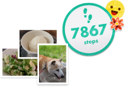

피크민을 만나 보세요
식물을 닮은 신비한 생명체로, 맨눈으로 볼 수는 없지만 사실 우리 주변 곳곳에 존재한답니다. Pikmin Bloom에서는 여러 종류의 각기 다른 피크민을 만나볼 수 있어요. 새로운 피크민을 키워서 뽑아 주면, 즉시 대열에 합류하여 어디든 여러분을 따라갈 겁니다.
피크민은 과일에서 수집할 수 있는 정수를 즐겨 먹습니다. 배불리 먹여 주는 거야말로 피크민의 마음을 얻는 가장 좋은 방법이기도 하고요. 피크민과의 밀접도가 오르면 가져온 아이템을 몸에 달고 데코피크민이 되기도 한답니다.
피크민들은 모두 7가지 종류가 존재하며, 각자 놀랍도록 힘이 세다거나 비행을 할 수 있는 등의 독특한 개성을 가지고 있어요. 데코피크민이 몸에 달고 있는 아이템은 당신이 피크민을 발견한 장소에 따라 다양하게 변화할지도 모른답니다.
피크민이랑 놀기
화분 팩에 모종을 넣은 후, 나가서 걷기 시작하세요! 충분한 걸음 수를 채우고 나면 완전히 성장한 새 피크민을 뽑을 수 있습니다.
여러분의 피크민에게 정수를 먹이면 아름다운 꽃이 피크민의 머리에 피어납니다. 꽃잎을 모아 두면 나중에 유용하게 쓰일 때가 있을 겁니다!
꽃잎을 사용해서 꽃을 심은 뒤, 산책을 계속하면 여러분 주변에서 꽃이 피어납니다. 어떤 곳으로 가든 형형색색 아름다운 자취를 남기는 거죠.
과일과 새로운 모종을 발견한 장소는 피크민들이 기억하고 있답니다. 그러니 언제든 탐험을 부탁해서 나중에 입수할 수 있어요.
하루 되돌아보기

하루 동안 걸은 내용을 되돌아보면서 오늘을 마무리할 수도 있습니다. 어떤 하루를 보냈는지 잊지 않기 위해 사진을 저장할 수도 있어요.
피크민을 탐험에 보내서 과일과 모종을 획득할 수 있다는 사실도 잊지 마세요. 이렇게 파견된 피크민은 최대한 빨리 돌아와서 또 다른 모험을 준비할 겁니다! 때로는 엽서를 가져올 때도 있으니, 친구들에게 보내 공유해 보세요.
지도에서 구름에 덮인 지역은 아직 피크민과 탐험하지 않은 장소를 나타내요. 매일매일 지평선을 넓히며 지도를 확장하는 것에 도전하세요!